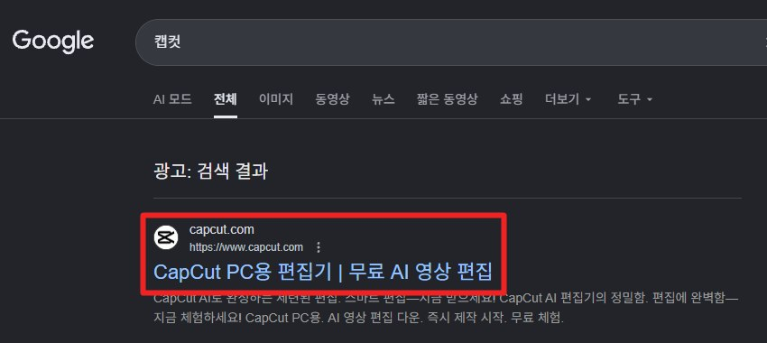
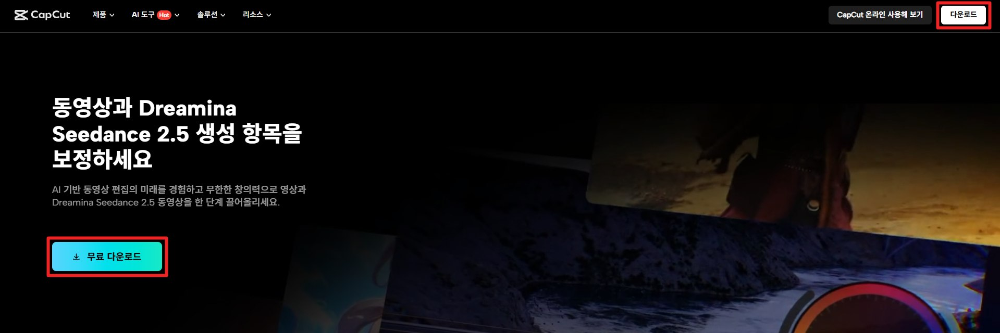
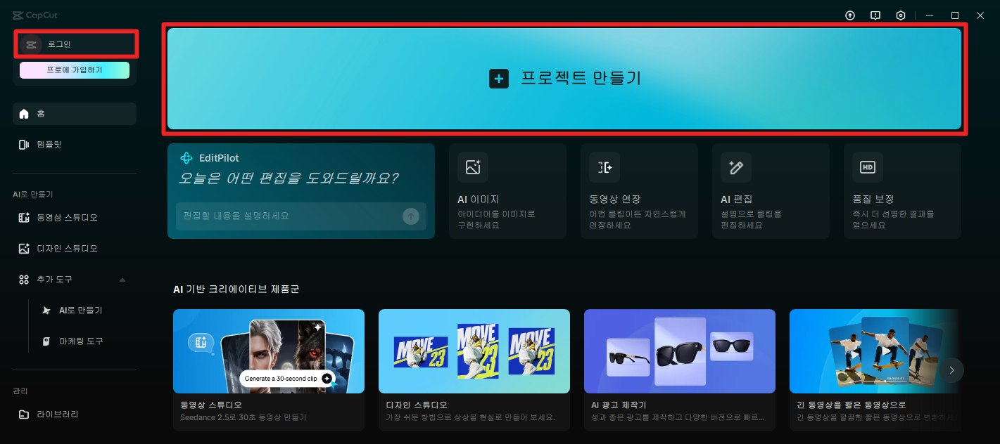
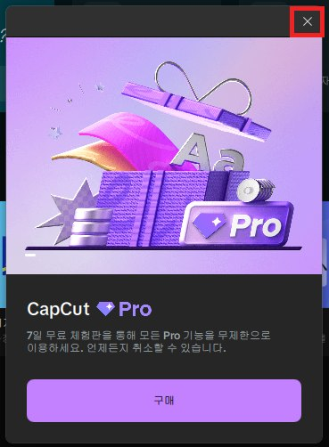

DAY 05AI 콘텐츠제작
CapCut 편집 · AI 배경음악 · 썸네일 · 이미지 릴스
AI가 좋은 장면을 만들어 줘도, 그것만으로 광고가 되지는 않습니다. 필요한 부분만 남기고, 순서를 정하고, 자막과 음악을 넣어야 끝까지 보는 "영상 콘텐츠"가 됩니다. 오늘은 CapCut으로 15초 광고를 완성하고, AI로 배경음악을 만들어 넣고, 유튜브 썸네일과 이미지 릴스까지 만듭니다.
1.오늘의 수업
영상 편집을 처음 해 보는 초보자
장면 준비 → 자르고 잇기 → 자막·음악 → 썸네일·릴스
편집은 "무엇을 더할까"보다 "무엇을 줄일까" — 장면을 골라 15초 광고 한 편 완성하기
CapCut (PC), Gemini (문구·음악 만들기·썸네일), Google Flow (장면이 없는 사람만)
가상의 음료 브랜드 '톡톡레몬'(레몬 탄산수)의 여름 광고 장면이 준비되어 있습니다.
"인스타 릴스에 올릴 15초 광고로 편집해 주세요. 음악과 자막도 넣어서요."
'톡톡레몬'은 수업용 가상 브랜드입니다.
오늘 쓸 크레딧 — 장면 영상이 없는 사람만 영상 3개, 약 45크레딧. DAY 04에 만든 장면이 있으면 0크레딧입니다.
2.오늘 배우는 내용 & 전체 흐름
3.실습: 영상 장면 준비 — 지난 시간 영상이 없어도 OK
1교시 · 실습 SET 00
01_등장 / 02_상큼 / 03_마무리 영상을 그대로 씁니다. 바로 아래 CapCut 설치로 넘어가세요.
아래 요청문 3개를 Flow에서 하나씩 만듭니다. 설정: 동영상, 이미지 없이 글만, 세로 9:16, 개수 x1. 다운로드 후 이름을 01_등장 / 02_상큼 / 03_마무리로.
영상이 만들어지는 동안 — CapCut 설치
학원 PC에 설치되어 있으면 실행만 합니다. 없으면 아래 순서로 설치하세요. 사진의 빨간 네모가 눌러야 할 곳입니다.
- 1구글에서 캡컷을 검색하고, 주소가 capcut.com인 결과를 누릅니다. 주소를 꼭 확인하세요.


- 2무료 다운로드를 눌러 PC용 프로그램을 설치합니다. "온라인 사용해 보기"는 웹 버전이라 오늘은 쓰지 않습니다.


4.편집이란? — 더하기보다 줄이기
1교시
새 장면을 만드는 일
이미 있는 장면 중에서 고르고, 자르고, 순서를 정하고, 글과 소리를 입히는 일
편집에서 가장 먼저 생각할 것은 "무엇을 더할까"가 아니라 "무엇을 줄일까"입니다.
편집의 비밀 한 가지
여행 사진 100장의 법칙
여행 가서 사진을 100장 찍었다고 100장을 다 SNS에 올리지는 않잖아요. 눈 감은 사진, 흔들린 사진, 손가락이 렌즈를 가린 사진은 조용히 앨범 속으로 들어가고, 세상에 나가는 건 "인생샷" 몇 장뿐입니다.
AI 영상도 똑같습니다. 장면을 넉넉하게 여러 개 만들어 두고, 그중 가장 눈길을 확 끄는(후킹) 3~5초, 또는 가장 자연스러운 3~5초만 골라 씁니다.
8초 만들어서 3초만 쓰면 아깝다고요? 나머지 5초는 "촬영장 비하인드"일 뿐입니다. 버리는 용기가 곧 편집 실력이에요.
5.CapCut 화면 익히기
1교시
왼쪽 위 로그인 후 가운데 프로젝트 만들기를 누릅니다. 바로 아래 프로에 가입하기는 유료 결제라 누르지 않아도 됩니다.


편집 화면은 네 구역입니다



"Pro" 표시가 붙은 것은 유료
CapCut을 켜면 Pro 체험 창이 뜰 수 있습니다. 구독은 각자 선택이고, 오늘 수업은 무료로 충분합니다. 효과·글꼴·목소리 등에 Pro나 왕관 표시가 붙은 것을 쓰면 내보낼 때 결제 안내가 나옵니다. 수업에서는 표시 없는 것만 씁니다.
6.실습: 장면 올리고 순서 정하기
1교시 · 실습 SET 01
- 1재료 창의 가져오기로 01·02·03 영상을 한꺼번에 불러옵니다.
- 2타임라인에 01 → 02 → 03 순서로 끌어다 붙입니다. 사이에 빈틈이 없게.
- 3미리보기 아래 비율이 세로 9:16인지 확인합니다.
- 4아무것도 하지 않은 상태로 Space를 눌러 처음부터 끝까지 재생합니다.

확인하기
- 영상이 너무 길지 않은가? (목표 15초)
- 움직임이 시작되기 전 멈춰 있는 부분이 있나?
- 이상하게 녹거나 모양이 바뀌는 부분이 있나?
7.실습: 앞뒤 자르기와 나누기
1교시 · 실습 SET 02
클립의 끝을 잡고 안쪽으로 끕니다. 처음에 멈춰 있는 1초, 끝에 모양이 이상해지는 부분을 잘라 냅니다.
자를 위치에 재생 막대를 두고 Ctrl + B. 가운데 이상한 조각만 골라 Delete.
클립 선택 → 설정 창 속도. 1보다 크면 빨라지고 짧아집니다. 늘어지는 장면은 1.2~1.5배, 강조할 순간은 0.5배.
목표 길이 예 — 01_등장 4초 / 02_상큼 6초 / 03_마무리 5초 = 15초. 중요한 장면은 조금 길게, 이어 주는 장면은 짧게.
바꿔 보기 — 02와 03의 순서를 바꿔 재생해 보고 어느 쪽이 자연스러운지 고르세요. 장면 구성표는 시작 기준일 뿐, 보고 바꿔도 됩니다. 실수했다면 Ctrl + Z.
8.실습: 자막 넣기
1교시 · 실습 SET 03
STEP 01 문구 받기 — Gemini
STEP 02 CapCut에 넣기
- 1재료 창 텍스트 → 기본 텍스트를 영상 위 줄에 끌어다 놓고 문구 입력
- 2중간 문구 1개는 02 장면 위에 2초 정도, 마지막 문구 + 제품 이름은 03 장면 위에
- 3텍스트 막대의 끝을 잡아 보이는 시간을 맞춥니다
다듬기
- 글자가 제품을 가리지 않는다
- 휴대폰 화면 아래쪽(버튼이 겹치는 곳)은 피했다
- 두 문구의 글꼴·색이 같다 (Pro 표시 글꼴은 쓰지 않기)
- (선택) 텍스트 애니메이션은 "나타나기" 하나만
레이어 — 타임라인에서 위 줄에 있는 것이 화면 앞쪽에 보입니다. 자막은 영상보다 위 줄에, 음악·효과음은 맨 아래 소리 줄에 놓입니다. 위아래 줄을 바꿔 보면 무엇이 가려지는지 바로 알 수 있습니다.
9.AI로 배경음악 만들기 — 무엇을 정할까
2교시
작사·작곡·연주까지 AI가 해 줍니다. 우리가 할 일은 "어떤 음악이 필요한지" 설명하는 것뿐. 아래에서 하나씩 골라 이어 쓰면 음악 요청문이 됩니다. 용도·장르·분위기·보컬 여부는 꼭 넣으세요.
| 정할 것 | 고를 수 있는 예 |
|---|---|
| 용도 ★ | 15초 SNS 광고 배경음악 · 브이로그 · 매장 배경음악 |
| 장르 ★ | K-pop · J-pop · 발라드 · 트로트 · 애니메이션 주제가풍 · 광고 음악(CM송·징글) · 밝은 팝 · 어쿠스틱 · 로파이(잔잔한 비트) · 재즈 · 시네마틱 |
| 분위기 ★ | 상큼한 · 차분한 · 신나는 · 고급스러운 · 따뜻한 · 긴장감 있는 |
| 보컬 ★ | 보컬 없음(배경음악) · 여성 / 남성 목소리 · 합창 |
| 빠르기 | 느리게 · 중간 · 빠르게 |
| 악기 | 피아노 · 기타 · 신시사이저 · 드럼 · 현악기 · 휘파람 |
| 흐름·끝 | 가볍게 시작해 밝게 마무리 · 끝은 서서히 작아지게 |
"○○ 가수 노래처럼" 대신 장르·빠르기·악기로 설명합니다. 결과도 더 정확하고, 남의 노래를 흉내 내는 위험도 줄어듭니다.
10.실습: Gemini(Lyria)로 배경음악 만들기
2교시 · 실습 SET 04
- 1Gemini 입력창 옆 +(도구) → 음악 만들기 (안 보이면 Gemini에게 "음악을 만들고 싶어. 어디서 해?")
- 2아래 요청문을 채워 보내기 → 들어 보고 마음에 들면 내려받기 (이름: 음악_톡톡레몬)
이어서 요청 (하나 골라서) — "같은 분위기로 조금 더 느리게" / "드럼을 약하게 해서 더 가볍게" / "분위기만 [다른 분위기]로 바꾼 버전"
11.실습: 음악·효과음·전환 넣고 내보내기
2교시 · 실습 SET 05
STEP 01 음악 넣기
- 가져오기로 음악 파일을 불러와 영상 아래 소리 줄에 놓기
- 영상 길이에 맞게 뒤쪽 자르기 (Ctrl + B → 뒷부분 Delete)
- 음악 선택 → 설정 창 오디오에서 페이드 아웃(서서히 작아지기) 1초
- AI 영상에 원래 소리가 있으면 음악을 조금 낮추거나, 영상 소리를 끄기
STEP 02 효과음 1~2개 (선택)
재료 창 오디오 → 효과음 검색 (예: bubble, splash, whoosh) → 레몬이 떨어지는 순간처럼 무언가 일어나는 순간에만.
STEP 03 전환 (선택)
먼저 전환 없이 재생 → 어색한 곳 한 군데에만 짧은 전환(예: 디졸브).
STEP 04 내보내기

오른쪽 위 내보내기 → 해상도 1080p → 이름 "05_톡톡레몬광고_이름" → 내보낸 파일을 한 번 더 재생해서 소리·자막 확인.
12.실습: 유튜브 썸네일 만들기
2교시 · 실습 SET 06
썸네일
영상을 누르기 전에 보이는 대표 이미지입니다. 작은 화면에서도 무엇인지 알아보게 주인공 하나 + 큰 글자 3~6자, 가로 16:9.
글자가 틀리게 나오면 글자 없이 다시 만든 뒤, CapCut이나 Google 슬라이드에서 글자를 넣습니다. 확인: 휴대폰에서 엄지손가락만 하게 봐도 무엇인지 알겠나?
13.실습: 이미지로 릴스 만들기
2교시 · 실습 SET 07
영상 없이 이미지 4~5장만으로도 릴스를 만들 수 있습니다. 카드뉴스를 릴스로 올릴 때 많이 쓰는 방법입니다.
그대로 씁니다.
Gemini나 Flow 이미지(크레딧 0)로 세로 9:16 이미지 4장 — "같은 스타일로, 레몬 음료가 있는 여름 장면 4장: 해변, 피크닉, 카페, 수영장"
- 1CapCut 새 프로젝트 → 이미지 4~5장 불러와 순서대로 놓기 (비율 9:16)
- 2장당 길이 2~3초로 맞추기
- 3이미지 선택 → 설정 창 애니메이션에서 "확대" 같은 움직임 하나 (Pro 표시 없는 것)
- 4SET 04의 음악 넣기 → 페이드 아웃 → 내보내기 "05_이미지릴스_이름"
14.막혔을 때 & 더 해 보기
| 이럴 때 | 이렇게 |
|---|---|
| 내보낼 때 결제 안내가 떠요 | Pro 표시 글꼴·효과·필터를 썼는지 확인하고 무료로 바꾸기 |
| 음악이 안 들어가요 | 다운로드 폴더에서 파일을 직접 끌어다 놓기 |
| 자막이 영상 끝까지 늘어나요 | 텍스트 막대의 끝을 잡고 줄이기 |
| 메뉴를 못 찾겠어요 | Gemini에게 "CapCut PC 버전에서 [하고 싶은 것]을 하는 순서를 알려줘" |
빨리 끝났다면 — 같은 광고를 가로 16:9 버전으로도 내보내 보기 (프로젝트 비율 바꾸고 글자 위치 다시 잡기)
15.오늘의 결과물
16.오늘의 핵심 & 다음 수업
핵심 — 편집은 "무엇을 줄일까"에서 시작합니다. 효과음과 전환은 필요한 곳에만.
DAY 06 — 캐릭터 · 이모티콘 · 4컷 만화
나만의 캐릭터를 만들고, 같은 모습을 유지하는 요령을 익혀 이모티콘과 4컷 만화를 만듭니다. 오늘 결과물이 없어도 처음부터 시작합니다.